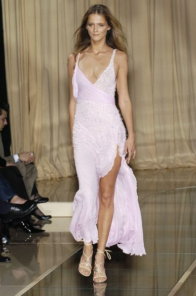
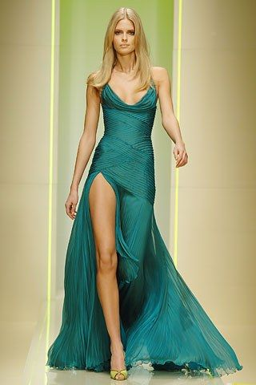
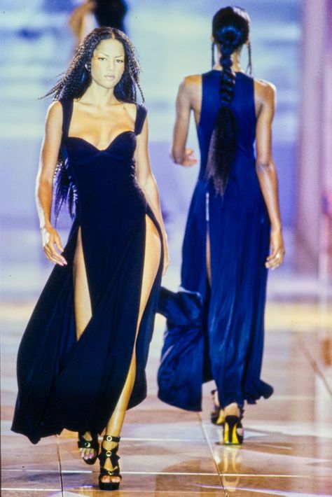

VERSACE DRESSES

This dress is from the 2005 spring collection. it is beautifully beaded and is the perfect pink shade. It is perfect for a classy night out or to wear to an art exhibition. This dress can be paired with silver heels, white heels and nude heels, depending on the style of the heel.

This dress was presented at Milan fashion week in the fall of 2005. The rich color of the dress makes it stand out and makes it interesting to me. The overall cut out of the dress is quite classic. However, it is interesting how a drop waist has been added. It is a beautiful addition, considering that it lengthens the dress and diffrentiates it from other designs.

This vibrant dress was debuted at the versace spring 1993 ready-to-wear collection fashion show. The neckline of the dress is quite classic and elegant; however, the two slits in the dress make it more edgy and suitable for a less formal event. It is still a quite formal dress; however, it can be debated whether or not it is considered a black tie dress.
Roberto Cavalli Website